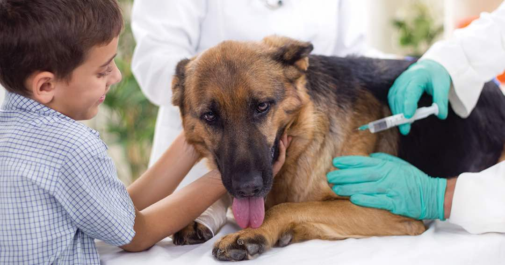

first post

The average incubation period (time from infection to time of development of symptoms) in humans is 30-60 days, but it may range from less than 10 days to several years.
Animals infected with rabies may appear sick, crazed, or vicious. This is the origin of the phrase "mad dog." However, animals infected with rabies may also appear overly friendly, docile, or confused. They may even appear completely normal.
Behavior of animals with rabies may be unusual. For example, seeing a normally nocturnal wild animal during the day (for example, a bat or a fox) or seeing a normally shy wild animal that appears strange or even friendly should raise suspicion that the animal may have rabies.